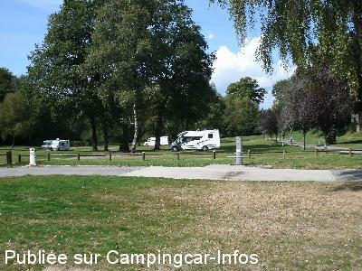
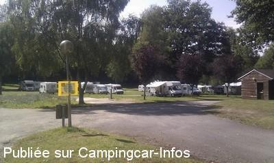
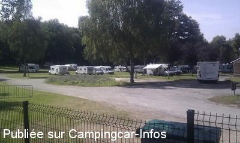
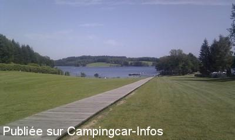

ASN = Aire de services avec stationnement nuit possible de :
PEYRAT LE CHÂTEAU Lac de Vassivière
(N° 330)
Accès/adresse :
Auphelle D233
87470 PEYRAT LE CHÂTEAU
87470 PEYRAT LE CHÂTEAU
Latitude : (Nord) 45.80567° Décimaux ou 45° 48′ 20′′
Longitude : (Est) 1.84329° Décimaux ou 1° 50′ 35′′
Tarif : 2015
Stationnement 01/05 au 30/10 : 8,20 €
Chien : 1 €
Services C-C de passage : 2 €
Taxe de séjour : 0,45 €
Type de borne : Autre
Services :


Le boulanger passe tous les matins en juillet et août
Baignade, pêche, bateaux, restaurants
Autres informations :
Emplacements engazonnés, sécurisés par une barrière automatique
Pas de services en période de gel

Le 19/09/2014 par PapyJP

Le 22/08/2011 par Bruno M

Le 22/08/2011 par Bruno M

Le 22/08/2011 par Bruno M
de
claire70
le 19/08/2015 :
Nous sommes passés à AUPHELLE et nous nous sommes renseignés des tarifs. Nous étions mi-août.
8,50 € la nuit et les chiens en supplément. Sans services.
Nous avons passé notre chemin.
Nous sommes passés à AUPHELLE et nous nous sommes renseignés des tarifs. Nous étions mi-août.
8,50 € la nuit et les chiens en supplément. Sans services.
Nous avons passé notre chemin.
de
jlou
le 15/08/2015 :
bonjour
j'y suis passer les 7&8 août aire sympa bien ombragée
dommage pour les sanitaires surtout pour 8.2€
bonjour
j'y suis passer les 7&8 août aire sympa bien ombragée
dommage pour les sanitaires surtout pour 8.2€
de
christine
le 30/07/2015 :
Attention, depuis début juillet, interdiction de stationner le long du lac (arrêté préfectoral). Nous avons été sur l'aire d'Auphelle (8 € + taxe de séjour + 1 € pour le chien = 9,90 € ! + 2 € pour l'eau) et nous n'avions pas accès aux sanitaires du camping. Un gentil chauffeur du taxi bateau nous a carrément dit que "les campings cars n'apportaient rien". Vu l'accueil chaleureux et les tarifs élevés au vu des prestations, nous sommes partis. Sinon très, très calme. Pas de commerce.
Attention, depuis début juillet, interdiction de stationner le long du lac (arrêté préfectoral). Nous avons été sur l'aire d'Auphelle (8 € + taxe de séjour + 1 € pour le chien = 9,90 € ! + 2 € pour l'eau) et nous n'avions pas accès aux sanitaires du camping. Un gentil chauffeur du taxi bateau nous a carrément dit que "les campings cars n'apportaient rien". Vu l'accueil chaleureux et les tarifs élevés au vu des prestations, nous sommes partis. Sinon très, très calme. Pas de commerce.
de
PapyJP
le 16/09/2014 :
16/09/2014:
Le site est vaste et calme. Le stationnement se fait sur terrain engazonné pas trop plat mais arboré.
Le paiement se fait à l'accueil du camping. Le personnel est très sympathique et souriant.
On peut trouver du pain sur l'ile (en prenant le taxi bateau gratuit) à la boulangerie à l'ancienne. Se renseigner des jours et heures d'ouverture variable selon saison.
16/09/2014:
Le site est vaste et calme. Le stationnement se fait sur terrain engazonné pas trop plat mais arboré.
Le paiement se fait à l'accueil du camping. Le personnel est très sympathique et souriant.
On peut trouver du pain sur l'ile (en prenant le taxi bateau gratuit) à la boulangerie à l'ancienne. Se renseigner des jours et heures d'ouverture variable selon saison.
de
Jamet
le 06/11/2013 :
Aire sympa, gratuite hors saison. Très belles randonnées autour du lac à pied ou en vélo mais pas de navettes bateaux en octobre.
Endroit à découvrir.
Aire sympa, gratuite hors saison. Très belles randonnées autour du lac à pied ou en vélo mais pas de navettes bateaux en octobre.
Endroit à découvrir.
de
CHOUPETTE
le 21/06/2013 :
LE 30 MAI 2013
Nous avons passé 4 jours sur l'aire d'Auphelle en face du camping. Les barrières étaient ouvertes, pas de tarif affiché, pas de monnayeur, personne n'est venu encaisser. Ceci dit l'aire est très agréable, propre, emplacement sur l'herbe. Beaucoup de promenades autour du Lac, plages aménagées, navette gratuite pour accéder à l'Ile de Vassivière, croisière en bateau... A recommander.
LE 30 MAI 2013
Nous avons passé 4 jours sur l'aire d'Auphelle en face du camping. Les barrières étaient ouvertes, pas de tarif affiché, pas de monnayeur, personne n'est venu encaisser. Ceci dit l'aire est très agréable, propre, emplacement sur l'herbe. Beaucoup de promenades autour du Lac, plages aménagées, navette gratuite pour accéder à l'Ile de Vassivière, croisière en bateau... A recommander.
de
eric
le 21/08/2012 :
§
bonjour
nous sommes passes par auphelle le 19/08/2012,le tarif est passe a 6.10 le CC avec 2 personnes et 2.55 la personne suplementaire en haute saison,cela devant etre regle au camping , tarif d autant plus convenable car il est notifie que l on a acces au sanitaire du camping
le boulanger passe tous les matins ce qui est tres pratique
a l entree de l aire une note indique les tarifs et les modalites , mais indique aussi que la communaute de commune du lac a decide d autoriser le stationnement libre tout autour du lac...
cela va t il durer? car en nous promenant autour du lac nous avons pu constater que cela entraine une debauche de CC de partout , beaucoup respecterons les lieux mais tout le monde fera t il pareil??
§
bonjour
nous sommes passes par auphelle le 19/08/2012,le tarif est passe a 6.10 le CC avec 2 personnes et 2.55 la personne suplementaire en haute saison,cela devant etre regle au camping , tarif d autant plus convenable car il est notifie que l on a acces au sanitaire du camping
le boulanger passe tous les matins ce qui est tres pratique
a l entree de l aire une note indique les tarifs et les modalites , mais indique aussi que la communaute de commune du lac a decide d autoriser le stationnement libre tout autour du lac...
cela va t il durer? car en nous promenant autour du lac nous avons pu constater que cela entraine une debauche de CC de partout , beaucoup respecterons les lieux mais tout le monde fera t il pareil??
de
Bruno M
le 22/08/2011 :
Passage en Août, beaucoup de place, superbe aménagement avec de l'ombre et très calme, à 2 pas du lac.
La nuitée à 4.40 € pour 2 personne à régler au camping des 2 Îles.
On m'y a d'ailleurs confié que prochainement des sanitaires et quelques bornes électriques seront installées sur l'aire, et une barrière automatique sera placée à l'entrée, de façon à ne plus avoir besoin d'aller au camping pour régler sa nuitée.
Une réalisation qu'on aimerait trouver plus souvent.
Passage en Août, beaucoup de place, superbe aménagement avec de l'ombre et très calme, à 2 pas du lac.
La nuitée à 4.40 € pour 2 personne à régler au camping des 2 Îles.
On m'y a d'ailleurs confié que prochainement des sanitaires et quelques bornes électriques seront installées sur l'aire, et une barrière automatique sera placée à l'entrée, de façon à ne plus avoir besoin d'aller au camping pour régler sa nuitée.
Une réalisation qu'on aimerait trouver plus souvent.
de
rafale
le 21/05/2011 :
§
La municipalité équipe actuellement cet emplacement pouvant contenir de nombreux camping-cars.
Une borne vient d'être installée (vidange eaux usées et noires + eau propre -> coût 2 euros).
Fiche à faire passer dans les aires de service.
Le lac de Vassivières semblant difficile d'accès aux promeneurs, tout du moins dans cette zone clôturée, passons notre chemin.
§
La municipalité équipe actuellement cet emplacement pouvant contenir de nombreux camping-cars.
Une borne vient d'être installée (vidange eaux usées et noires + eau propre -> coût 2 euros).
Fiche à faire passer dans les aires de service.
Le lac de Vassivières semblant difficile d'accès aux promeneurs, tout du moins dans cette zone clôturée, passons notre chemin.